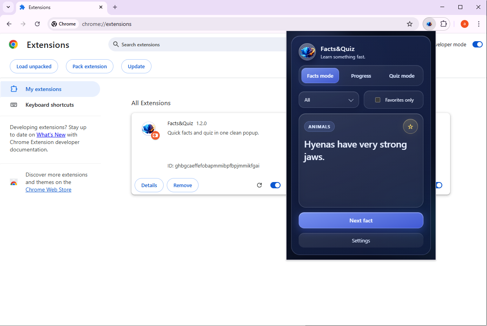
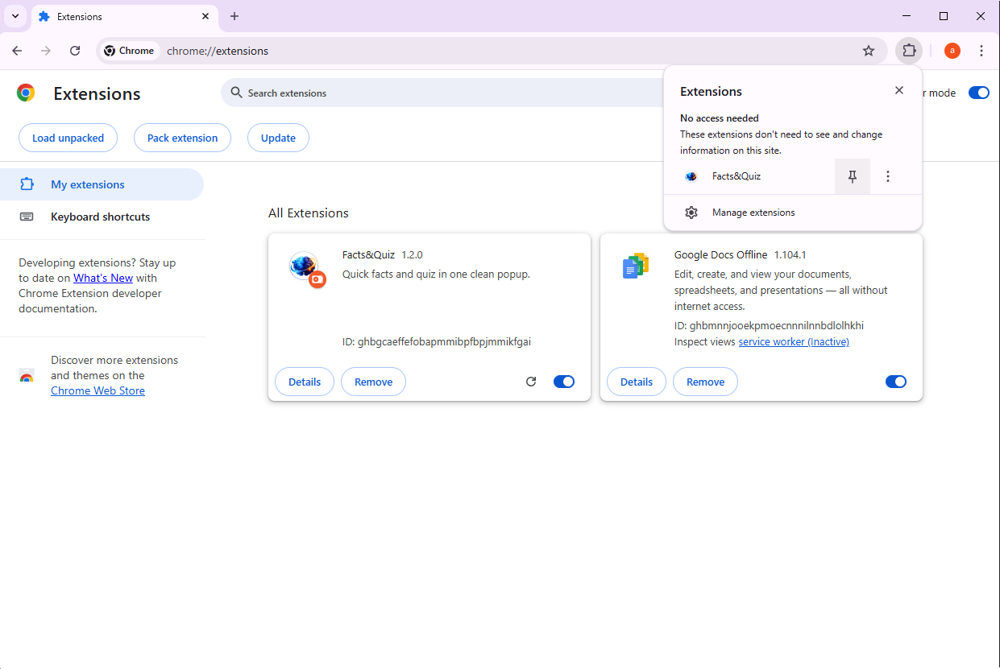
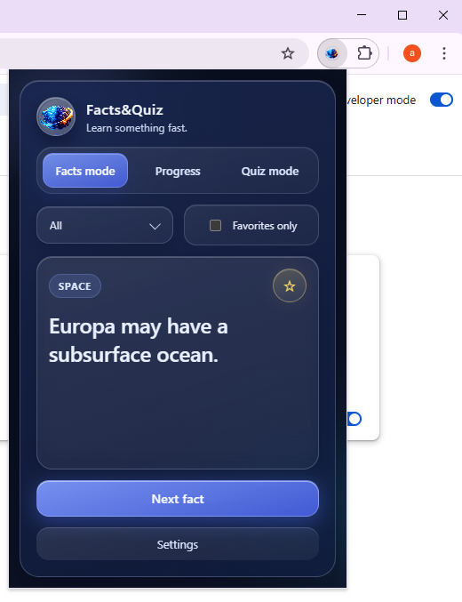
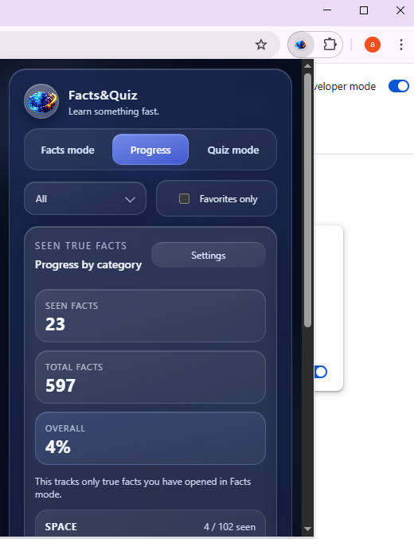
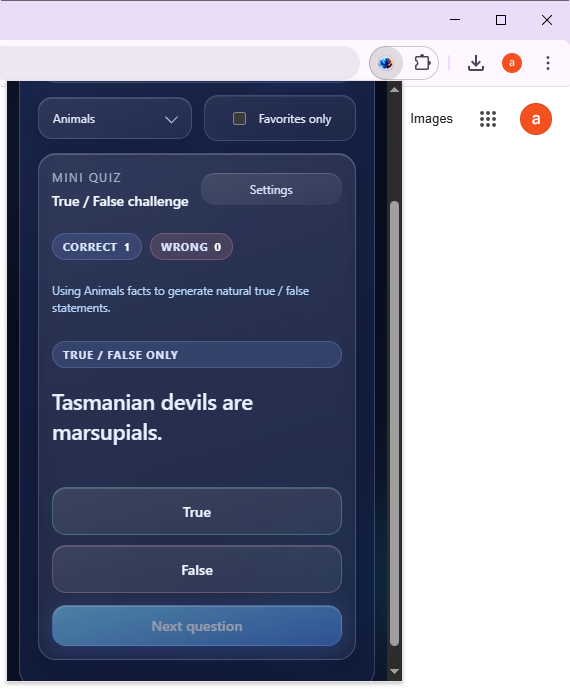
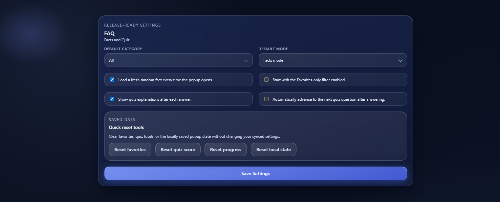
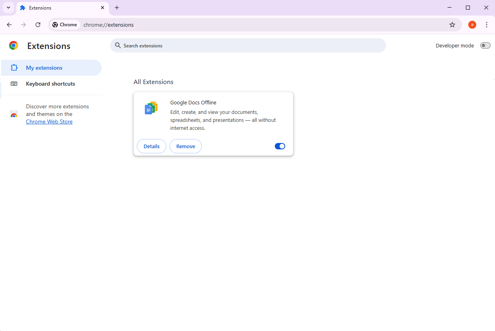
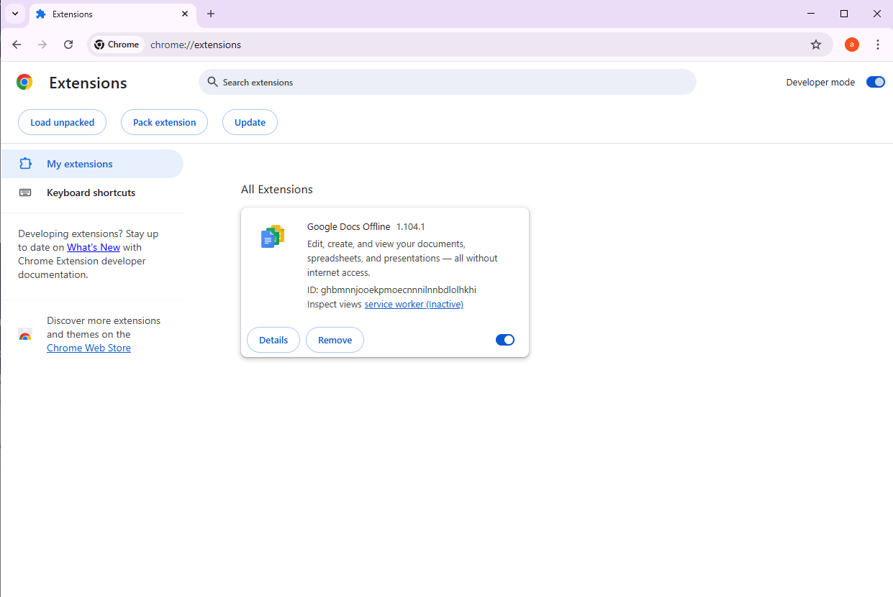
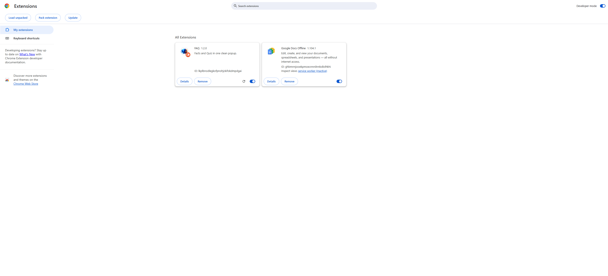

597
Total facts available
Learn something fast.
A polished Chrome extension for quick learning moments. Browse curated facts, save favorites, track how much you have already explored, and jump into a fast true / false challenge without leaving the browser.

Open the popup, get a fact instantly, and keep going without friction.
Favorites, progress, and quiz mode give the extension real staying power.
Real screenshots from the extension, presented in a cleaner product showcase layout for customers, journalists, and anyone evaluating the project.
The main popup keeps the focus on one strong fact at a time, with quick access to category filters, favorites, and the next interaction.
A focused fact card design makes the extension feel more like a premium micro-learning tool than a simple randomizer.

Once pinned, Facts&Quiz stays one click away in Chrome for fast fact browsing during breaks, study sessions, or quick curiosity checks.

A compact overview of the extension with the main browsing interface, quick navigation, and strong fact-first layout.

Saved facts can be filtered into a tighter personal collection for faster revisiting and review.

Progress mode shows how much of each category the user has already covered through true facts.

The same dataset becomes a lightweight true / false challenge with fast interaction and feedback.

Users can define default startup behavior, quiz preferences, and reset tools from a dedicated settings page.
Beyond random facts, the extension includes enough structure to make people come back and keep learning.
Explore facts across science, space, history, animals, technology, and nature in a clean popup.
Save standout facts and revisit them later with a dedicated favorites-only flow.
Track how many true facts you have already seen and how far you are in each category.
Switch from passive reading to lightweight quiz practice with quick answer feedback.
Choose startup behavior, default category, default mode, and explanation preferences.
Favorites, last fact, quiz totals, and progress are stored through Chrome storage for continuity.
This version is loaded manually through Chrome Developer Mode, so the page includes the full setup guide.
Go to chrome://extensions in Chrome to open the extension management screen.

Enable Developer mode in the top-right corner so Chrome allows local extension loading.

Click Load unpacked and select the extracted Facts&Quiz project folder.

Pin the extension to the toolbar so facts and quiz mode stay one click away.
For feedback, collaboration, testing, or press requests, use one of the options below.